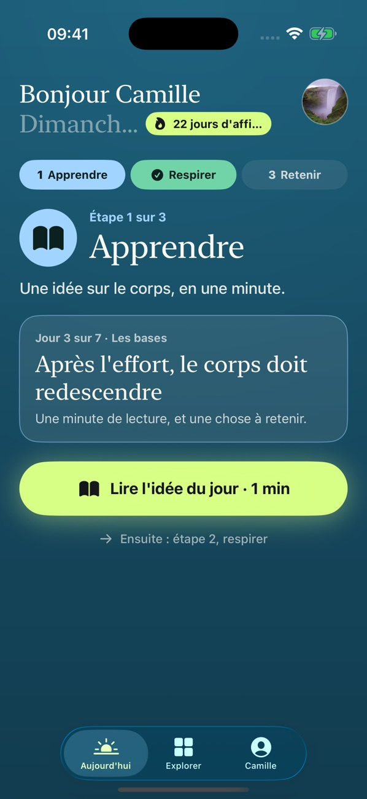
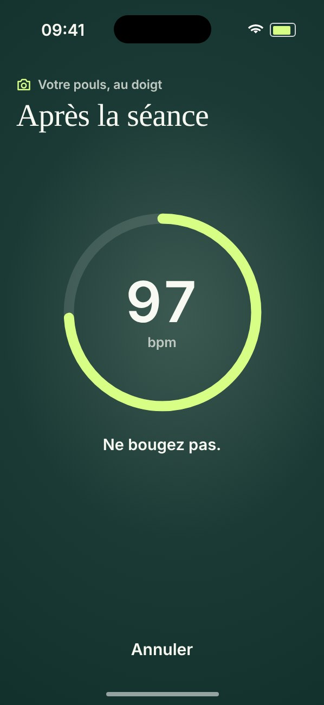
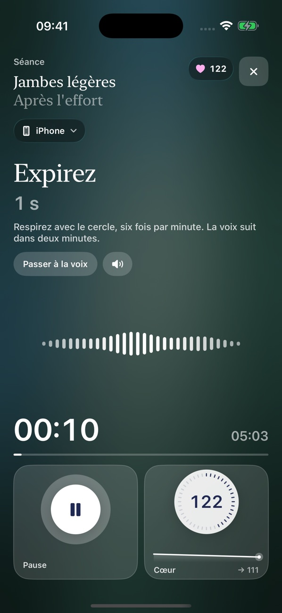
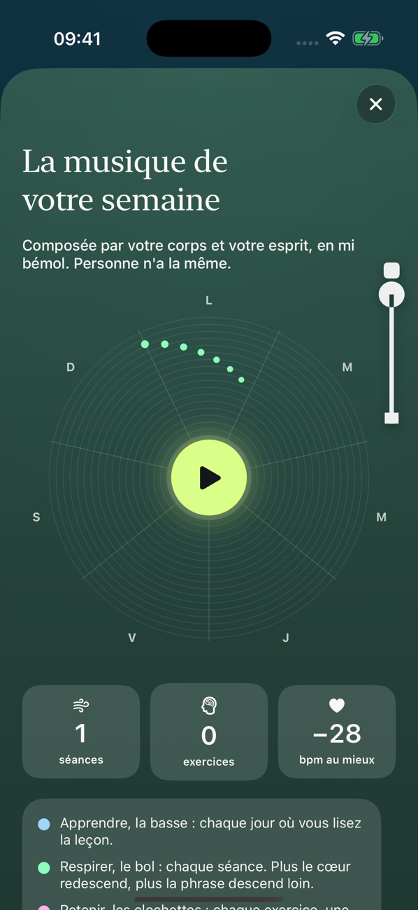

Récupérer après le sport · iPhone
Ce qui se passe après l'effort compte autant que l'effort.
Cinq minutes, juste après la séance. Le corps redescend, la tête suit, et votre iPhone vous montre de combien.

Le moment d'après
Après l'effort
Vous arrêtez la montre. Le corps, lui, n'a pas fini : le cœur bat encore vite, le souffle est court, la tête tourne. On soigne beaucoup l'entraînement, et très peu les minutes qui suivent.
Nouveau · Sans montre
Votre cœur, mesuré par l'appareil photo.
Posez l'index sur l'objectif arrière de l'iPhone. Le flash éclaire le doigt, et à chaque battement le sang change très légèrement la couleur de la peau. Replere lit ce rythme. C'est le principe des oxymètres de doigt.
Trente secondes avant la séance, trente secondes après. Vous voyez de combien votre cœur est redescendu.
- Avant
- 112 bpm
- Après
- 97 bpm
- Écart
- −15
Exemple de mesure. Une estimation pour comparer avant et après, pas une mesure médicale. Une montre ou une ceinture cardio restent plus précises, et Replere les lit aussi. Aucune image n'est gardée.

Cinq minutes, trois étapes
Apprendre, respirer, retenir.
- 01ApprendreUne idée sur le corps, en une minute. On vous redemande celle d'hier, de mémoire.
- 02RespirerUne séance de sophrologie guidée par la voix. Deux minutes de souffle rythmé, puis la voix.
- 03RetenirUn court exercice de mémoire, juste après : l'effort récent aide à retenir.

La mémoire de soi
Votre semaine, en musique.
Chaque séance pose une phrase au bol chantant, chaque exercice ajoute des clochettes, chaque leçon une note grave. Le dimanche, vous écoutez ce que votre corps a composé. Et une fois par semaine, Replere vous remontre ce que vous aviez noté sept jours plus tôt.

Le mot du fondateur
J'ai créé Replere parce qu'on soigne beaucoup l'entraînement, et très peu les minutes qui suivent. Je voulais une app qui prenne soin du corps et de la tête, sans publicité ni promesse en l'air. Si quelque chose vous déplaît, écrivez-moi : je lis tout.
Anatole Pitron, fondateur · contact@replere.app
Gratuit pendant la bêta
Essayez-la après votre prochaine sortie.
Toutes les séances restent gratuites. À la sortie sur l'App Store, Replere Plus ajoutera les programmes et le détail de vos données, à 5,99 € par mois ou 39,99 € par an. Vos données restent sur votre iPhone.
Sur ordinateur ? Scannez ce code avec l'appareil photo de votre iPhone.
Replere est un accompagnement de bien-être, pas un dispositif médical. Ce que dit la recherche, sources comprises.
Photos : Yazid N, Alekon pictures et Daniel Lincoln, sur Unsplash.